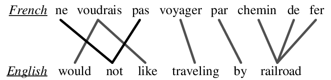
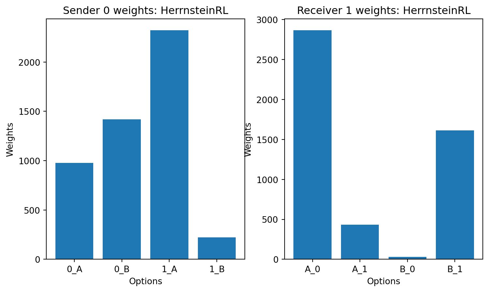
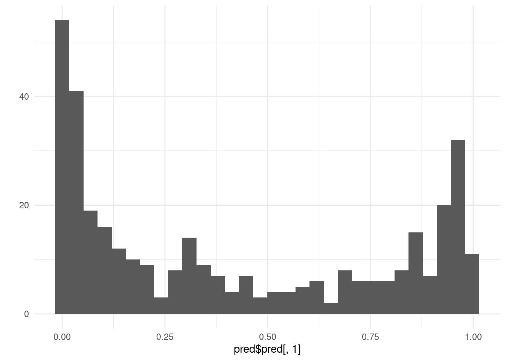
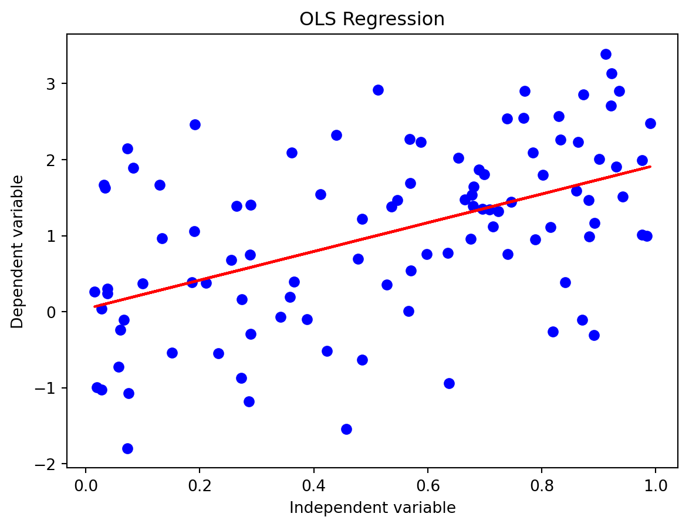
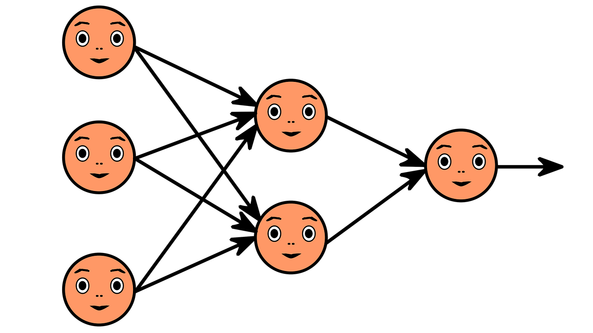
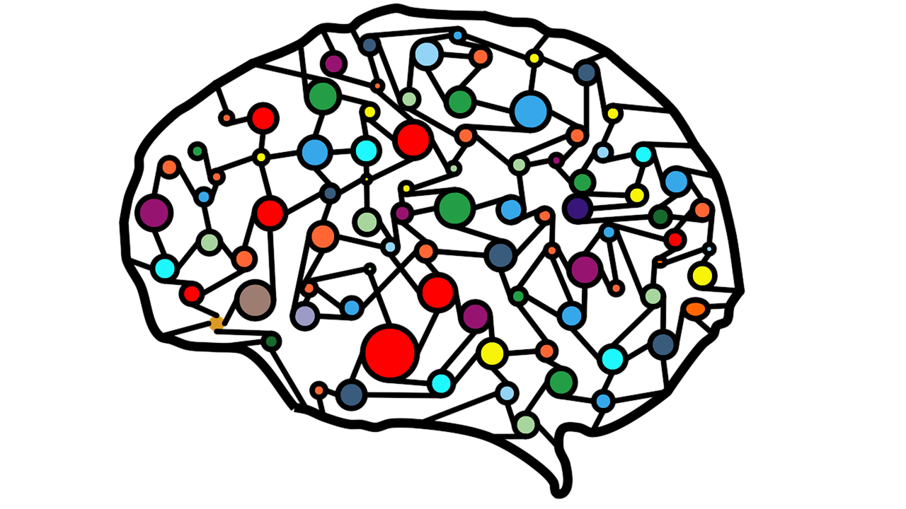
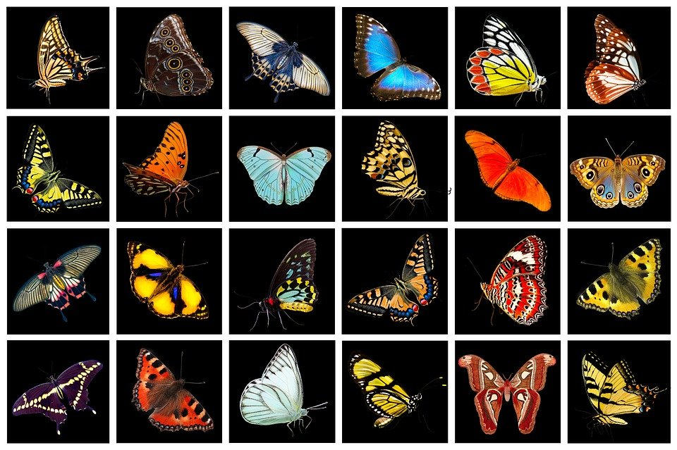
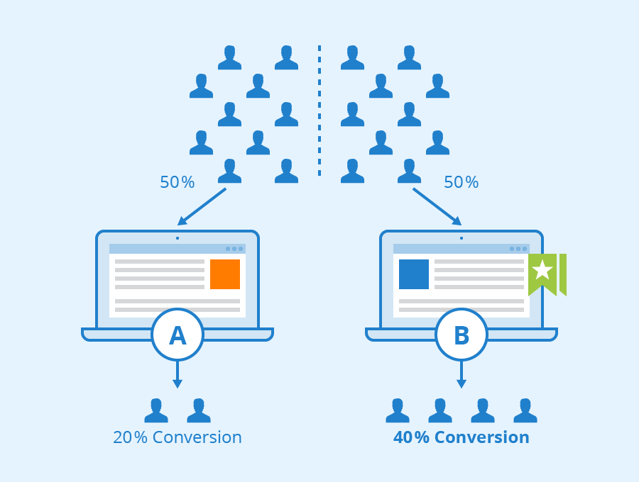

Exploring GenAI-powered tools
A working paper on emergent languages
Review of Mandelbrot’s papers on scaling in financial prices and his popular science book The (Mis)behaviour of Markets.

A review of Marco Baroni’s talk on the emergence of languages and the role of compositionality in language evolution.

A deep dive into the complex signaling systems
Patrick Henry Winston provides a definition of AI. How he keeps expanding his definition as he goes along is thing of beauty. It expands organicaly to incorporate new ideas…
Quarto at last supports Mindmap charts using Mermaid charts.
Some thoughts on the Lewis signaling game
some migration notes from Blooger to Jekyl to Quarto blog.

SuperLearner is an ensambeleing library.
Autogluon is a auto-ml framework, here are three cheetsheet for accellerating data science workloads
This paper was referenced by Drew Bagnell in the Coursera RL specilization for using simple quadratic approximation to learn a model in a continous control setting. The…
MetropolisHastings
fake data

cost
sales
shelf price
Set Up M1 MacBooks for DS & ML
command line cheea sheet macos + zsh + git
A meme is an idea, behavior, style, or usage that spreads from person to person within a culture. A meme bank would be a zoo for cataloging and breeding memes.
Getting more from your digital marketing agency, my five cents on picking your agency.
Excel 2019 for Marketing Statistics in pandas
Language models and explainability
Attention for sensor fusion
Storytelling and other essentials,
Stochastic Gradient Descent - The good parts
The WaveNet paper is kind of old. Yet it seems to come up in various contexts. Some thoughts on this.
Python Graph Cookbook
Creating Citation Web Components
Wikipedia Hackathon notes

An algorithm for Inlining Citations for Wikipedia articles.

Transfer learning in NLP

writing better code = writing more readable code.
Different Multilevel Models Types
Concepts, slide commentaries and Lecture notes on Automatic text Summarization by Masa Nekic
Modeling Events.
A review of the paper “Language Models are Open Knowledge Graphs” by Chenguang Wang, Xiao Liu, Dawn Song arXiv:2010.11967
How to blog like a life-hacker.
My attempts to get the jekyll version of this site to also build locally.
Issues and workarounds for MatchJax 3.0.
Review of the paper on dot product attention for the deeplearning.ai NLP specialization.
numpy melt down.
echo "you won "{two,three,four}"…
Just a little rant on Pandas various contexts
Post description

A/B testing cost and risks and some recommendation.
Effective time management is crucial for success in both personal and professional life. With the right approach, you can achieve more in less time while maintaining a…